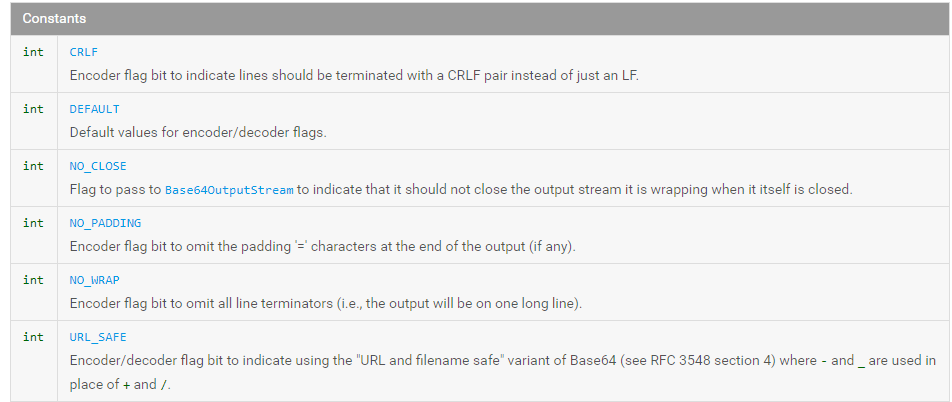
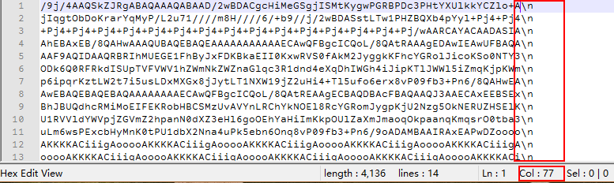

Android使用base64(Base64.NO_WRAP)并显示到html.img标签中的正确方式
Android使用android.util.Base64.encodeToString(字符串.getBytes(),Base64.NO_WRAP)序列化图片，并且支持显示到网页img标签的格式正确方式。
错误的示范：android.util.Base64.encodeToString(字符串.getBytes(),Base64.DEFAULT);
网上搜到的Android截屏为base64方法，大都为:
android.util.Base64.encodeToString(字符串.getBytes(),Base64.DEFAULT);
注意此处Base64.DEFAULT，如果仅在Android系统中使用Java代码共享数据，那完全没问题。如果要显示到html的img标签中，那就识别不了。
正确的序列化方式为: android.util.Base64.encodeToString(字符串.getBytes(),Base64.NO_WRAP);
也就是使用Base64.NO_WRAP代替Base64.DEFAULT.

原因是Base64.DEFAULT选项输出了\n字符。大概每行在76字，字符串默认也会追加一个\n。

参考：https://developer.android.com/reference/android/util/Base64.html